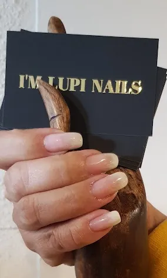
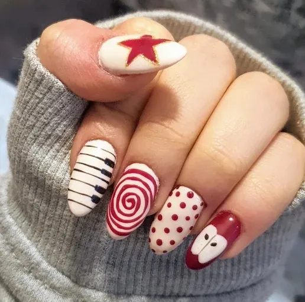
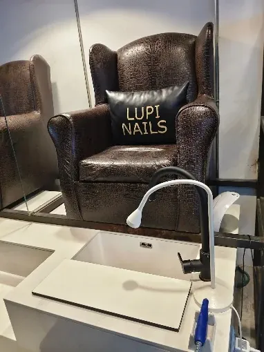

Tradicional
Si cambias de color cada semana.
- Esmalte CND Vinylux, del color que quieras
- Te lo quitas en casa con quitaesmalte
- Desde 15 €, en 25 minutos
Salón de uñas en Sant Just · manicura, pedicura y nail art
Doble esterilización del material, marcas premium y veganas como CND Shellac y Vinylux, y nail art pintado a pincel.
Toca un color y míralo puesto. Si te gusta, díselo a Valentina, Johanna o Jessy cuando vengas. carta de muestra
21 colores en semipermanente
Los mismos servicios, precios y duraciones que en nuestra ficha de Booksy, con lo que incluye cada uno. Si algo va aparte, te lo decimos aquí.
Limado y esmalte CND Vinylux de un color. Sin cutículas ni retirada.
Limado, cutículas y esmalte CND Vinylux de un color.
Corte, limado, cutículas, semipermanente de un color, hidratación y masaje. Sin francesa ni nail art.
Limpieza profunda de cutícula y una capa niveladora que refuerza uñas frágiles o con estrías. Incluye deco sencilla en 2 uñas.
Manicura completa con CND Shellac de un color: se aplica y se retira sin limar la uña y dura hasta 21 días.
Hasta 12 años: limado y esmalte tradicional.
Refuerza la uña natural sin alargarla: construcción con gel y semipermanente de un color.
Para uñas hechas en Lupi, con hasta cuatro semanas de crecimiento.
Alargamiento corto o medio con gel, acrygel o Dual System, según tu uña.
Con moldes. Incluye nail art en una uña.
Envíanos antes una foto para valorar si es posible.
En seco: corte, limado y esmalte. Sin cutículas ni durezas.
Corte, cutículas, durezas, hidratación y esmalte tradicional.
Lo mismo, con semipermanente de un color. De las más reservadas.
Nuestra pedicura más completa, para relajar e hidratar los pies. Sin esmalte, con tradicional o con semipermanente.
Con tinte efecto negro incluido.
Forma según tu cara. Después, basta con el mantenimiento.
Nariz, orejas, entrecejo o mentón.
Utensilios de madera y masaje en la zona que elijas: piernas y glúteos, abdomen y cintura, o brazos.
Una sesión más pausada para trabajar varias zonas.
En cabina, centrado en puntos de dolor y nudos.
Precios de 5 € a 85 €, de la ficha de Booksy en octubre de 2026. Allí ves los huecos libres y reservas en un minuto.
248 reseñas en Booksy y 4,7 en Google. Lo que más repiten: el trato, que lo explican todo y que vuelven. nota de Google por confirmar
«Temía que doliera y fue muy relajante. Jessy me explicó cada paso y salí con las piernas ligeras.»

«Primera visita y un 10: me lo explicaron todo y recuperaron unas uñas que llegaron muy mal.»

«Todo genial, servicio de 10, muy recomendable.»

«Trato muy agradable, muy eficiente y uñas muy bonitas.»
Tres maneras de llevar color, cada una con su duración y su retirada. Desliza y quédate con la tuya.
Si cambias de color cada semana.
Si quieres olvidarte de las uñas unas semanas.
Si te preocupa cuidar tu uña natural.
Lo que no se ve, pero cuenta.
Para que no haya sorpresas al pagar.
Sin pegatinas: cada diseño se pinta a mano alzada. Valentina y Jessy hacen nail art avanzado; tráeles una foto o déjate aconsejar.
Dónde estamos
Abierto
| Lunes | 9:30–17:00 |
| Martes a viernes | 9:30–19:00 |
| Sábado | 9:30–14:00 |
| Domingo | Cerrado |
Eliges servicio, día y hora en Booksy y te llega la confirmación al móvil. Si prefieres hablar, llámanos.